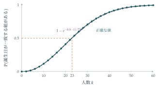

STEP II 2007、第13問
先に進む前に問題を読んでおこう。問題は STEP Support Programme の問題データベースにある： step.maths.org/questions/07-s2-q13
導入
部屋に何人いれば、その中の誰か2人の誕生日が一致する確率（probability）が半分を超えるだろうか。多くの人は \(365\) の半分の \(180\) 前後と予想する。答えは \(23\) である。30人のクラスなら誕生日が一致する組がある確率は \(70\%\)、50人のパーティーなら \(97\%\) になる。
この意外さは、2つの異なる問いを混同することから生じる。「自分と同じ誕生日の人はいるか」（こちらは確かに約 \(253\) 人が必要である）と、「誰か2人の誕生日が一致するか」である。\(23\) 人いれば組は \(\binom{23}{2} = 253\) 通りあり、どの組も一致する可能性をもつ。この問題はその直観を厳密なものにする。そして同じ数学が、銀行口座を守る暗号（cryptography）の安全性を決めているのである。
取りかかる前に
どの2人の客も誕生日が一致しない確率の方が計算しやすいのはなぜか。客を一列に並べてみよ。2人目が1人目の誕生日を避ける確率はいくらか。3人目がその2人の誕生日をともに避ける確率はどうか。
「少なくとも2人が一致する」には、互いに重なり合う多くの場合が含まれる（2人が一致する、3人が一致する、異なる2組がそれぞれ一致する、…）。その余事象（complement）である「全員異なる」は、ただ1つのすっきりした事象である。2人目が1人目の誕生日を避ける確率は \(\frac{364}{365}\) であり、そのもとで3人目が2人の誕生日をともに避ける確率は \(\frac{363}{365}\) である。以下同様である。
順を追って解く
段階 1 有用な近似
\(x = 0\) における \(y = e^{-x}\) の接線（tangent line）は何か。
\(e^{-x} = 1 - x + \frac{x^2}{2} - \cdots\) であるから、\(x\) が小さいとき \(e^{-x} \approx 1 - x\) である。\(x = r/n\) とおくと、 \[\frac{n - r}{n} = 1 - \frac{r}{n} \approx e^{-r/n}. \qed\] 誤差はおよそ \(\frac{r^2}{2n^2}\) であり、\(r\) が \(n\) よりずっと小さければ小さい。
段階 2 誕生日が一致する確率
\(k\) 人の誕生日がすべて異なる確率は \[\frac{365}{365}\cdot\frac{364}{365}\cdot\frac{363}{365}\cdots\frac{365 - (k - 1)}{365} = \prod_{r=0}^{k-1}\frac{365 - r}{365}.\] である。各因数にこの近似を用い、指数関数の積は指数の和になることを使うと、 \[\prod_{r=0}^{k-1}e^{-r/365} = \exp\Bigl(-\frac{0 + 1 + \cdots + (k - 1)}{365}\Bigr) = \exp\Bigl(-\frac{k(k - 1)}{730}\Bigr).\] よって、誕生日が一致する組が少なくとも1つある確率は近似的に \(1 - e^{-k(k-1)/730}\) である。■
指数に注目せよ。\(\frac{k(k-1)}{730} = \binom{k}{2}\Big/365\) である。これは言葉で言うと何を意味するか。
これは客の組の数に、ある特定の組の誕生日が一致する確率 \(\frac{1}{365}\) を掛けたもの、すなわち一致する組の数の期待値（expected number）である。この近似は、一致がない確率が \(e^{-(\text{一致の個数の期待値})}\) であることを述べており、第 9.8 節 と同様に、ここにもポアソン分布（Poisson distribution）の気配が現れている。
段階 3 23人
\(1 - e^{-k(k-1)/730} \geq \frac12\)、すなわち \(e^{-k(k-1)/730} \leq \frac12\) となる必要があるから、 \[\frac{k(k - 1)}{730} \geq \ln 2 \approx \frac{253}{365}, \qquad\text{すなわち}\qquad k(k - 1) \geq 506.\] \(22 \times 21 = 462\)、\(23 \times 22 = 506\) であるから、最小の値は \(k = 23\) である。■
（客が \(23\) 人のときの正確な確率は \(0.507\)、\(22\) 人のときは \(0.476\) であるから、この近似は正しい答えを与えている。）
段階 4 主催者と誕生日が一致する場合
各客について、主催者と誕生日が一致しない確率はいくらか。この点に関して、客どうしは互いに独立であるか。
各客は独立に確率 \(\frac{364}{365} \approx e^{-1/365}\) で主催者の誕生日を外す。よって \(k\) 人の客の誰も主催者と誕生日が一致しない確率は \(\bigl(\frac{364}{365}\bigr)^k \approx e^{-k/365}\) であり、 \[e^{-k/365} \leq \tfrac12, \qquad\text{すなわち}\qquad k \geq 365\ln 2 \approx 253.\] が必要である。したがって客は \(253\) 人必要である。■
この対比こそが要点である。特定の1人と一致させるには \(253\) 人の客が必要だが、どこかの組が一致するには \(23\) 人で足りる。\(23\) 人いれば \(253\) 組ができるからである。

振り返り
余事象を使う。「全員異なる」はただ1つの積であったが、「少なくとも1組一致する」は煩雑であった。
線形化（linearise）してから指数関数にする。各因数 \(1 - x\) を \(e^{-x}\) で置き換えることで、積が和に変わった。
組を数える。指数は、組の数に1組が一致する確率を掛けたものであった。\(k(k-1)\) に現れる2乗こそが、このパラドックス（paradox）の説明のすべてである。
背後にある数学
平方根則
\(365\) の代わりに、等確率な \(n\) 個の日があるとすると、同じ議論から \[\mathrm{P}(\text{一致がある、人数 } k) \approx 1 - e^{-k^2/(2n)},\] が得られる。よって一致が起こりやすくなるのは、\(k\) が \(n\) ではなく \(\sqrt{n}\) 程度になったときである。より正確には、確率が \(\frac12\) に達するのは \(k \approx 1.18\sqrt{n}\) のときであり、最初の重複が起こるまでに出会う必要のある人数の期待値は約 \(\sqrt{\pi n/2}\) である（\(n = 365\) なら約 \(24.6\)）。この平方根則（square-root law）こそが、偶然の一致がこれほどありふれている理由である。大量の出来事の集まりの中では、特定の一致はどれも起こりにくいにもかかわらず、何らかの組が何らかの形で一致する可能性は高いのである。
誕生日攻撃
コンピュータは、ファイルが改ざんされていないことをハッシュ（hash）を計算して確認する。ハッシュとは、たとえば \(n = 2^{128}\) 通りの値をとる指紋のようなものである。同じハッシュをもつ2つの文書（無害な契約書と不正な契約書）を作りたい偽造者は、\(2^{128}\) 個の文書を試す必要はない。誕生日の議論により、それぞれの変種を約 \(\sqrt{2^{128}} = 2^{64}\) 個ずつ生成すれば、おそらく一致が見つかる。この誕生日攻撃（birthday attack）があるために、現代のハッシュ関数は \(256\) ビット以上を用いる。平方根則によってビット数の半分が失われるからである。同様の計算により、2台のコンピュータが偶然同じものを選ぶことが決してないようにするには、ランダムな識別子をどれだけ長くすべきかも決められる。
誕生日問題（birthday problem）は通常、1939年にこれを論じたリヒャルト・フォン・ミーゼス（Richard von Mises）に帰せられるが、それ以前から知られていた。Harold Davenport もそれ以前にこれを知っていたが、あまりに簡単に思えたので発表しなかったと言われている。Warren Weaver の語るところによれば、彼は第二次世界大戦中、陸軍将校たちとの夕食会でこれを実演するのを好んだ。その場にいた22人のうち2人の誕生日が一致するほうに賭けて負けたが、そのときウェイトレスが、自分の誕生日が将校の1人と同じであることを明かしたという。
思考のスキル
「少なくとも1つ」が複雑なときは、「1つもない」確率を求めよ。積が扱いにくいときは、各因数を指数関数で近似し、指数を足し合わせよ。
どちらの手法も大学では標準的なものである。2つ目の \(1 - x \approx e^{-x}\) は、ポアソン近似の理論や、正確に計算するには複雑すぎる量を見積もるための漸近的手法（asymptotic methods）の出発点である。
次の一歩
最初の重複。STEP II 2014、第13問 に挑戦せよ。乱数生成器から最初に重複して現れる値を調べる問題で、形を変えた誕生日問題である。その確率から2つの意外な恒等式が導かれる。
3人が一致。誰か3人の誕生日が一致する確率が半分を超えるには、おおよそ何人必要か。（ヒント：誕生日が一致する3人組の個数の期待値は \(\binom{k}{3}/365^2\) である。これを約 \(\ln 2\) とおけ。）真の答えは \(88\) である。
ニアミス。2人の誕生日が同じ日または隣り合う日である確率が半分になるには、何人必要か。
偏りのある誕生日。現実の誕生日は一様ではない。各日の確率が \(p_1, \ldots, p_{365}\) であるとき、2人の誕生日が一致する確率は \(\sum p_i^2\) であり、これはすべての \(p_i\) が等しいときに最小となることを示せ。（よって一様でないことは、一致をより起こりやすくするだけである。）
さらに学ぶために
William Feller, An Introduction to Probability Theory and Its Applications, Vol. 1（Wiley）、第II章。誕生日問題とその近似。
Persi Diaconis & Frederick Mosteller, “Methods for studying coincidences”, Journal of the American Statistical Association 84 (1989)。偶然の一致がありふれている理由。非常に読みやすい。
David Hand, The Improbability Principle（Bantam）。平方根則をはじめ、起こりそうにないことが絶えず起こる理由を解説する。